In this lab, we will create a Lambda function and web API that will retrieve a random image from a site and display it. We will use the web console to build and deploy the code.
To begin with, bring up the AWS console, then click on Lambda. Click "Create a function"
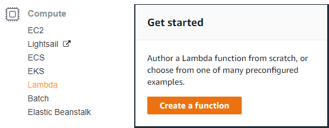
Then, select "Author from Scratch". In the configuration,
lambda-<OdinID> as the name of the functionLabRole.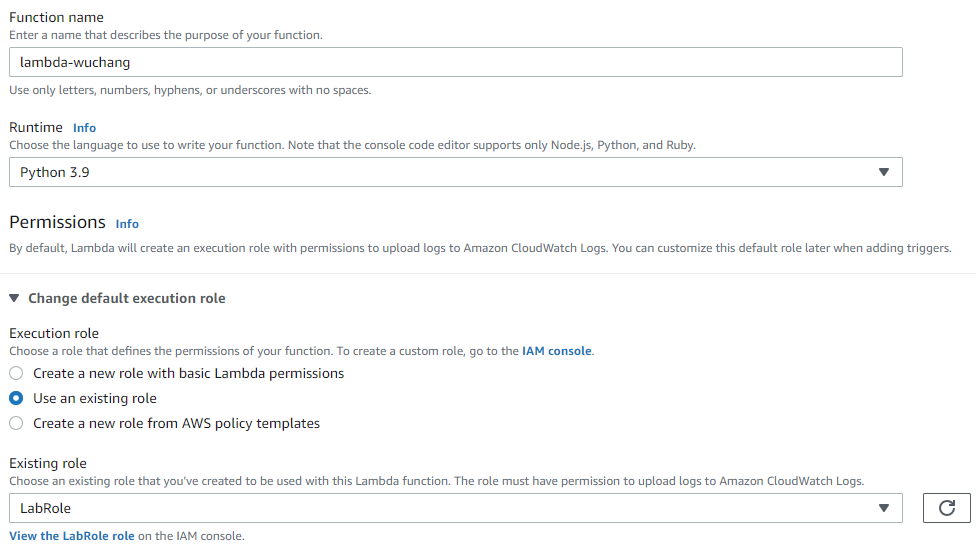
Click Add Trigger. View the various triggers within AWS that can cause the Lambda to execute including S3 storage events, SNS messages, CloudWatch events, CodeCommit events, etc.). Since we will be triggering our Lambda function via web requests, select API Gateway, the service that accommodates this.
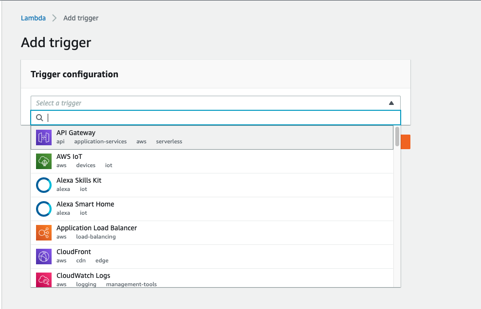
Register the function to be executed upon a request to an API endpoint by selecting "Create an API" and specifying the HTTP API type and "Open" for security. This makes our endpoint public for all to access (compared to internal APIs that only handle requests from within a project). Then click "Add".
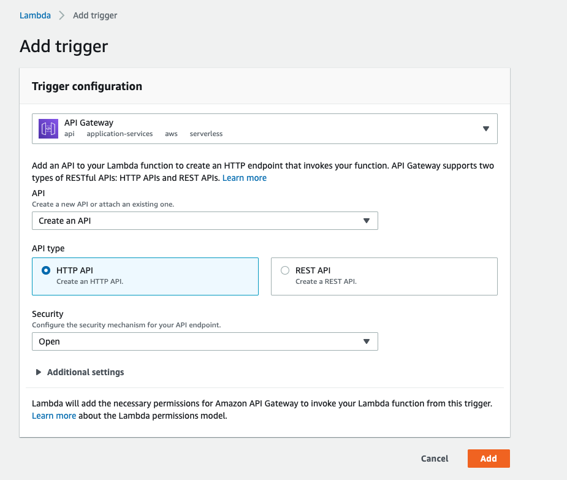
Click on the Lambda function to configure the function's code.
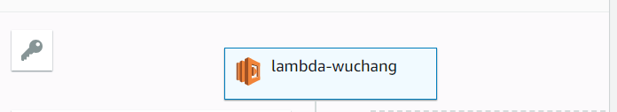
Scroll down to the code window to see the default code.
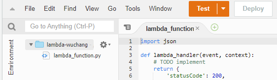
Replace the lambda_function.py code with code that is functionally equivalent to what is shown in the image below. The function (lambda_handler) first generates a random URL to an image site with a message of the day. It then retrieves the contents of the URL and returns a dictionary object whose attributes set the HTTP response status, the Content-Type: response header, and the payload returned. This dictionary object is a special object required by API Gateway in its Integration Response in order for API Gateway to form the response that is eventually sent back to the client.
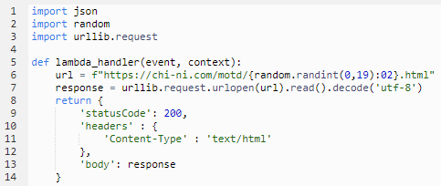
After implementing the Lambda, at the top of the interface, click "Deploy", then click "Test".
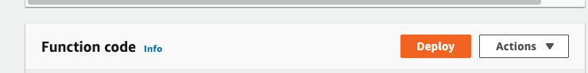
Configure and create a test event. Its body does not matter since it is ignored by our Lambda.
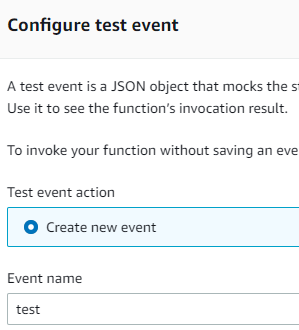
Click on "Test" and debug the results, if necessary. Successful execution should yield something similar to below:
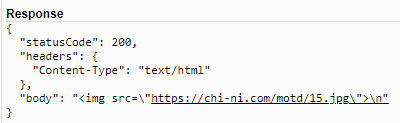
Note the name of your function and go back to "API Gateway" in the console and find the endpoint for the function.
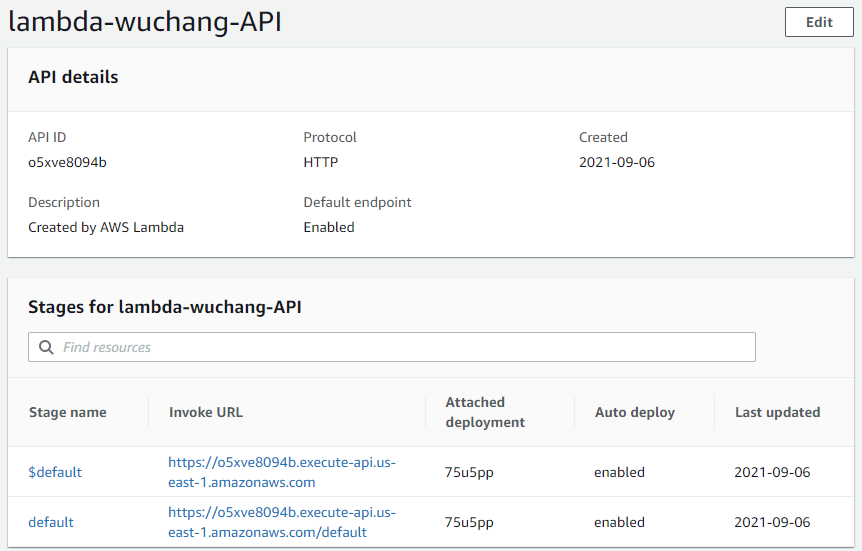
Copy the url of the default stage into your browser's URL bar, and append your lambda function's name to the end of the base url.
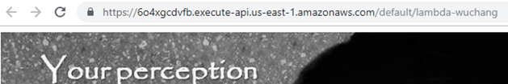
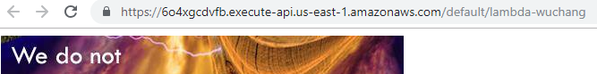
Visit Lambda in the AWS console. Select the Lambda created for this lab and delete it.
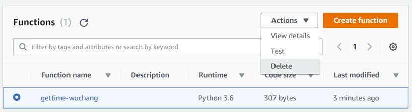
Then, visit API Gateway in the AWS console. Select the API created for this lab and delete it.
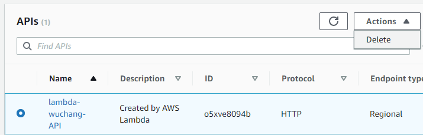
In this lab, we will create a Lambda function and API that will return the current time of day via a REST API. Rather than pass back HTML, we will instead format the response from our API in JSON. Using the same method as in the prior Lambda lab, create a Python Lambda function named gettime-<OdinID>. Setting the IAM Role for the Lambda to LabRole. Then, create an API Gateway trigger and set it to be a REST API. 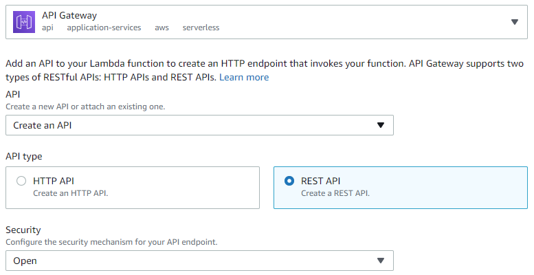
Implement the function code as shown below:
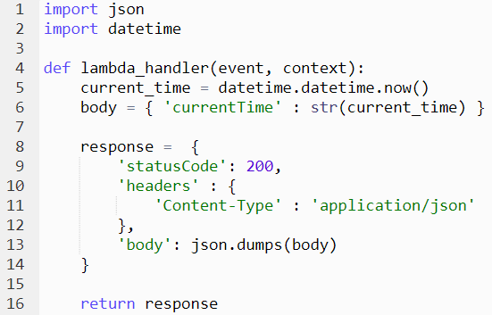
The code retrieves the current time via datetime.now(), then creates a Python dictionary that contains a single key 'currentTime' and sets its value to the string representation of the current time. Then, it creates a response object for API Gateway that sets the Content-Type: header to be application/json and returns the JSON encoding of the dictionary in the body via json.dumps().
Configure and create a test event as before and ensure that the API works as expected.
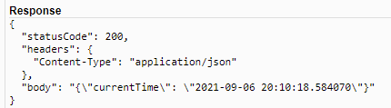
Then,
curl on your Linux VM to access the API endpoint and show the results. Take a screenshot for your lab notebook.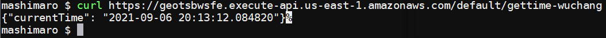
Visit Lambda in the AWS console. Select the Lambda created for this lab and delete the function.
Visit API Gateway in the AWS console. Select the API created and delete it.
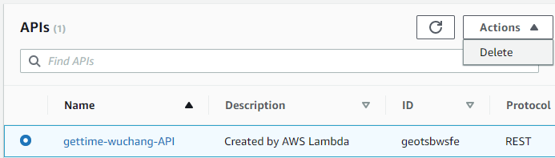